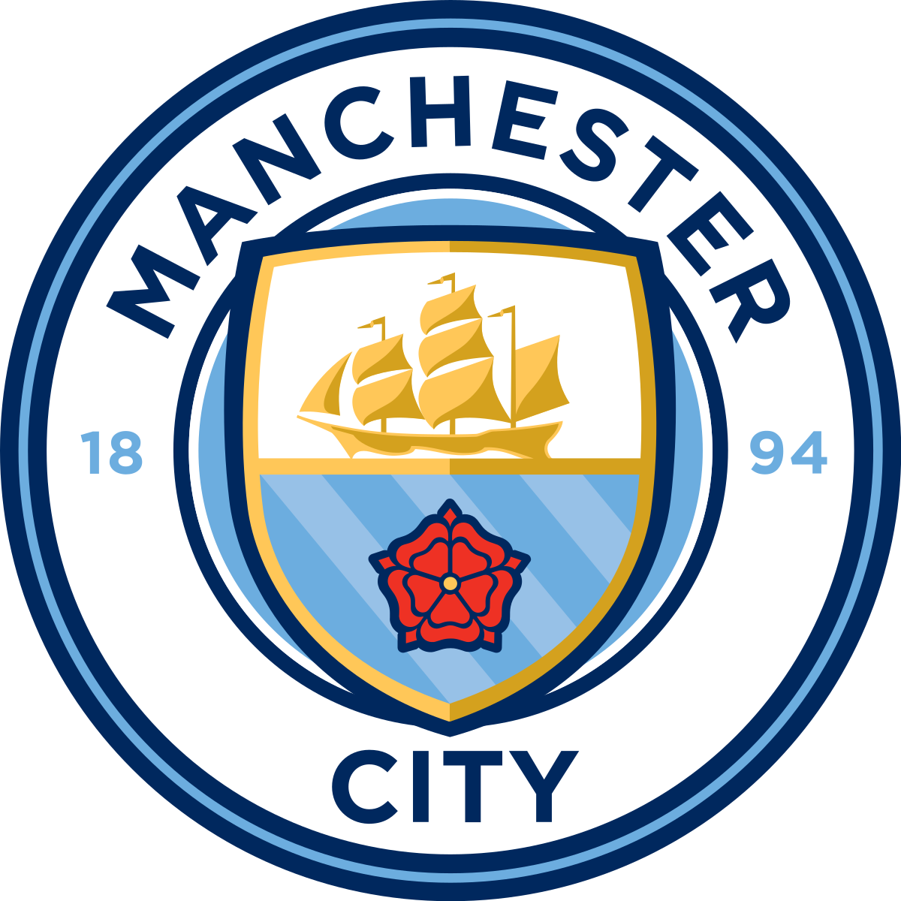

프리미어리그
프리미어리그 또는 잉글랜드 외의 지역에서 구분을 위해 잉글리쉬 프리미어리그는 1992년에 시작한 잉글랜드의 최상위 축구 리그이다.

-맨시티:
맨체스터 시티 FC는 잉글랜드 그레이터 맨체스터 주 맨체스터를 연고로
하는 1880년에 창단한 잉글랜드의 축구 클럽이다.
 -맨유:
맨체스터 유나이티드 축구 클럽은 잉글랜드 맨체스터에 있는 잉글랜드 프로 축구 구단이다.
-맨유:
맨체스터 유나이티드 축구 클럽은 잉글랜드 맨체스터에 있는 잉글랜드 프로 축구 구단이다.
구단은 1878년 3월5일 랭커셔 요크셔 철도의 뉴턴 히스 지부 실업팀인 뉴턴 히스 LYR FC로 설립되었고, 1902년 4월 26일에 팀명을 맨체스터 유나이티드 FC로 개명했다.
 -리버풀:
리버풀 FC는 잉글랜드 머지사이드 주 리버풀을
-리버풀:
리버풀 FC는 잉글랜드 머지사이드 주 리버풀을
연고로 하는 프리미어리그 축구 클럽이다.
-토트넘:
토트넘 홋스퍼 FC는 잉글랜드 북런던 토트넘을 연고지로
하는 프로 축구 구단이다. 현재 프리미어리그에 속해있다.
 -첼시:
첼시 FC는 잉글랜드 런던을 연고지로 하는 축구 클럽이다.
-첼시:
첼시 FC는 잉글랜드 런던을 연고지로 하는 축구 클럽이다.
1905년에 창단했으며 현재 잉글리시 프리미어리그에 소속되어 있다.